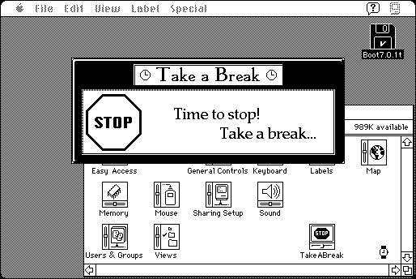

Download
TakeABreak2.0.zip (106K) TakeABreak 2.0 repackaged into a zipped hfs disk image and checksum file. The disk image can be mounted with Mini vMac.
TakeABreak2.0.sea.hqx (172K) TakeABreak 2.0 in the original format.
copyright: John V. Holder
mod date: Dec 31, 1996
license: shareware
last known url
(gone)
“Reminds you to take a break from the computer once in a while”. Can show a window, play a sound, or play a QuickTime movie. (Except that, while there might perhaps once have been a version of QuickTime that worked on the Mac Plus, I don't see any sign of it now.) For System “6.0.5” or later. Actually, it may require System 7, for Macintosh Plus emulation at least.

If you find these downloads useful, please consider helping the Gryphel Project, which hosts them.
Here are the md5 checksums for the downloads, signed with Gryphel Key 5:
--------- GRY SIGNED TEXT --------- 7c075c4badba23cc1cb3afc74e14ffc6 TakeABreak2.0.zip 312083128ccde1493b91b644cb56bc98 TakeABreak2.0.sea.hqx ------- BEGIN GRY SIGNATURE ------- Gry/4Xa8CFcUzxdN/BWMI5Zju0abLrrD5iLHFnLqF7/15JYJa98Kblbk1A8ZtG7Z MT2u2yx44OFdCOMptJDVN7/LvELs26KYJGcLgudHuhkH1b2n+p1lQEz8hoCw9QeT jWNz4CLwdi3KS6YtbD4WpXsTeehQ7a1h/lMqBQFhcu6/aYR4c6RMUZ0im9VJ8LAn -------- END GRY SIGNATURE --------